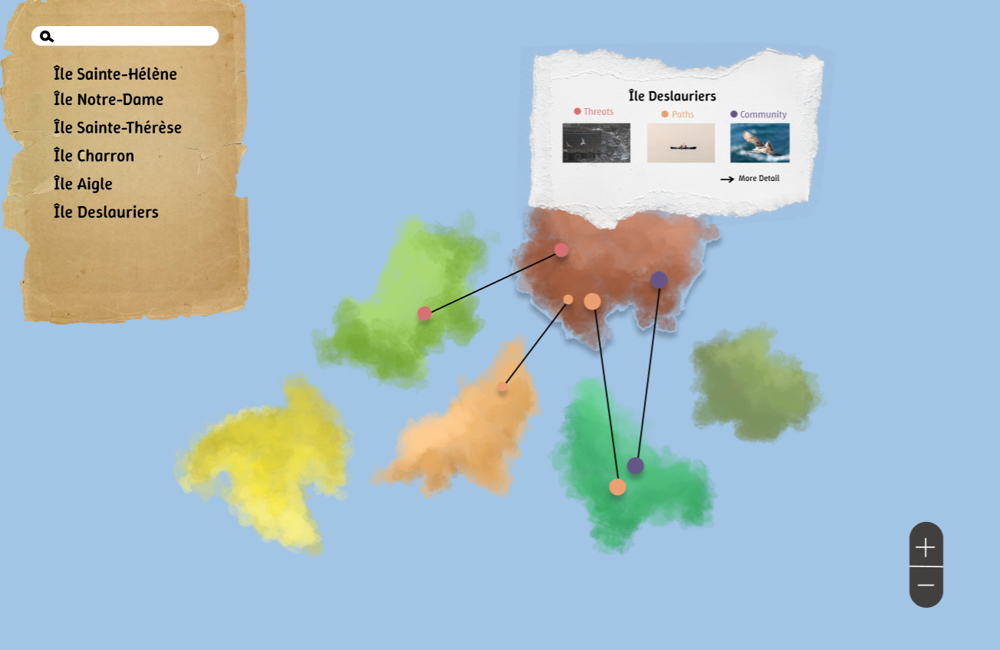
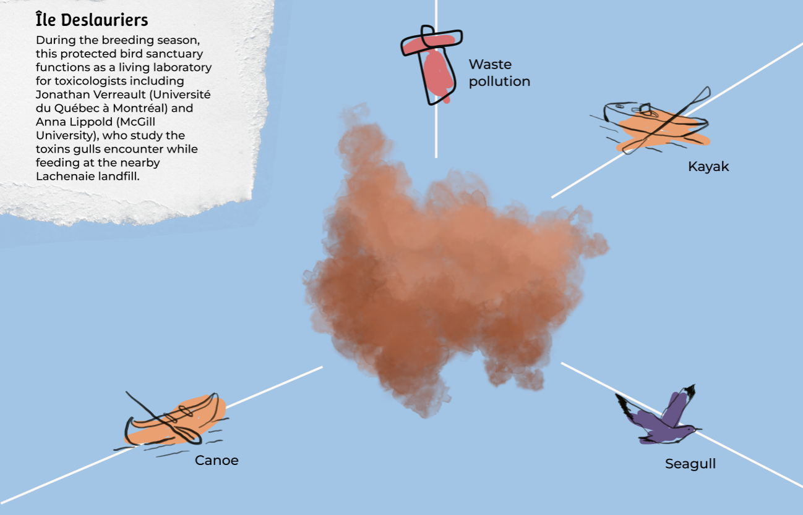
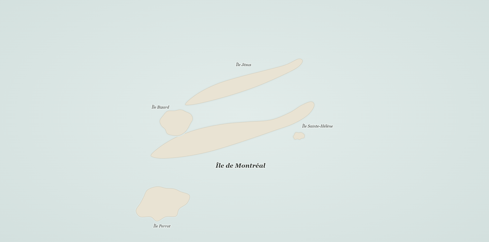
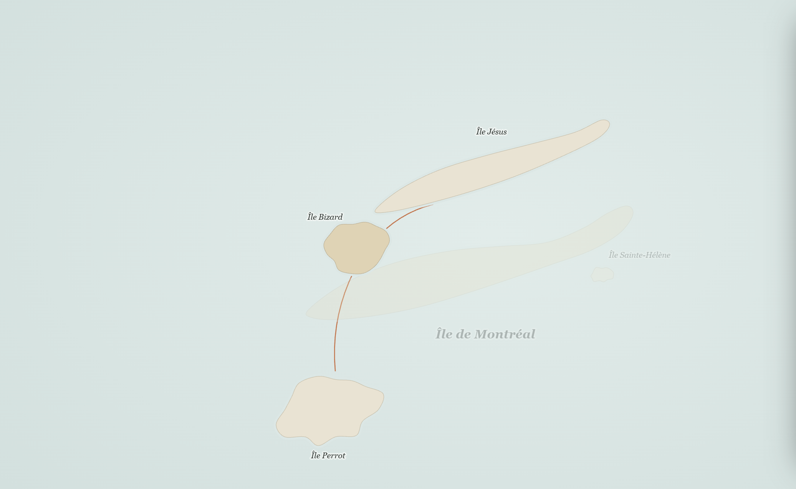
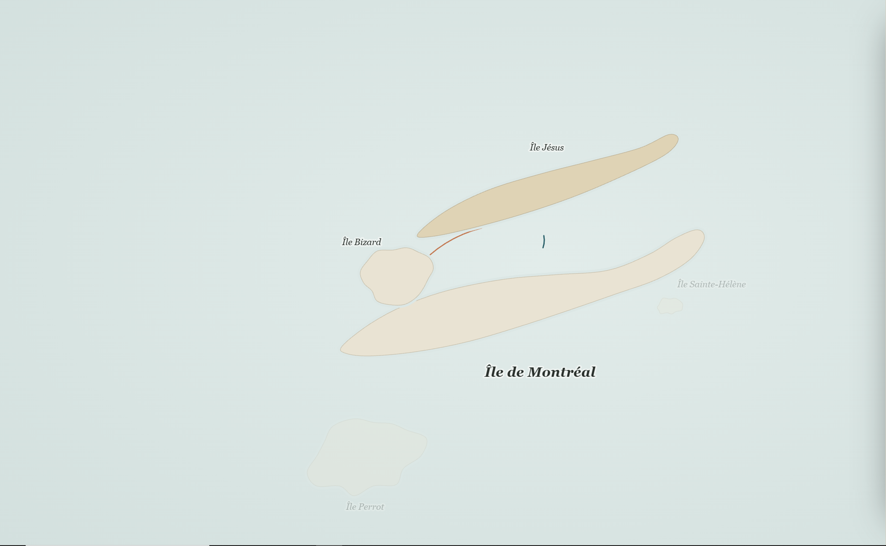
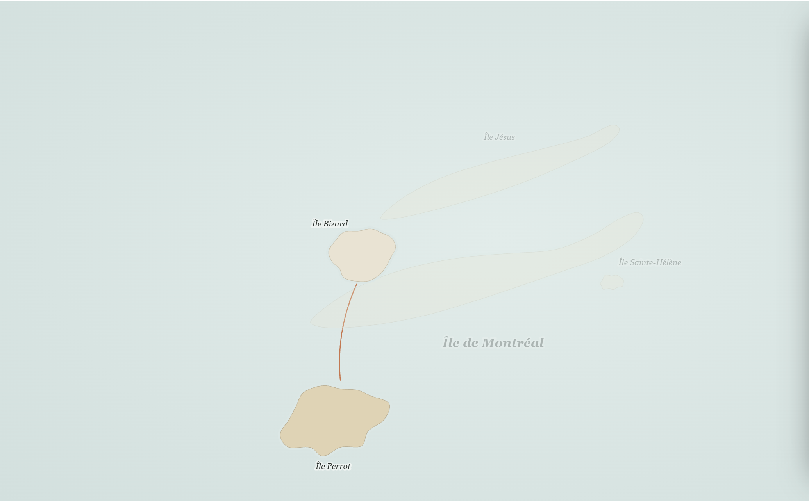
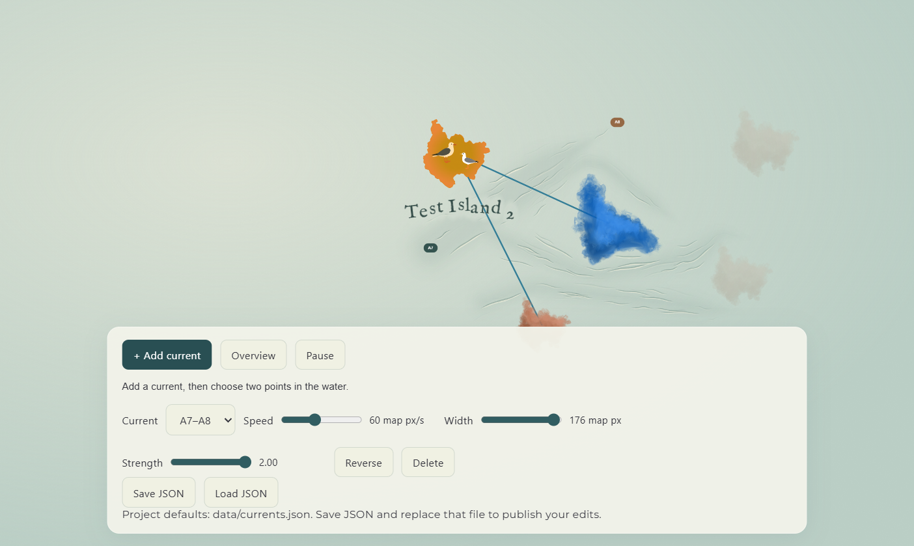

Design Journal
Week 8
Design Journal
Junming He
Hochelaga Archipelago
November 10, 2026
What I Worked On
This week, I mainly focused on improving the interaction between the overall map and individual islands. After reviewing our current design, I noticed that showing too many connections at once could overwhelm users, while focusing on a single island could make it difficult to understand its relationships with other islands. To address this, I explored a more selective way of displaying connections, experimented with fading out unrelated islands, and considered using a side panel to present information without leaving the map. I also tested a PNG-to-SVG transition to explore how additional visual details could appear when users select an island. Through these experiments, I wanted to find a better balance between providing information and guiding users through the map.
Reflection on the Current Map Design
After completing the Opening last week, I started looking at the overall map experience and the way users explore individual islands. I noticed that the two experiences currently feel somewhat disconnected. On one hand, the map can display many connections between islands at once, but showing too many connections may overwhelm users and make it difficult to understand what they should focus on. On the other hand, when users select an individual island, the experience becomes focused on that island's information, making it harder to see how the island relates to the others.
I think both approaches have their strengths, but neither fully communicates the relationships between the islands. This led me to a new question: How can I help users explore individual islands while still keeping their relationships with other islands visible?


Designing a More Focused Connection Experience
My idea was to combine these two approaches rather than choosing one over the other. Instead of displaying all the connection lines by default, I wanted the map to show only the connections related to the island that the user selects. For example, when a user clicks on one island, the map displays lines connecting it to other related islands. When they select a different island, the previous connections disappear and are replaced by the new ones.
There are two reasons behind this decision.
First, I want to control how much information appears on the screen at the same time. By only displaying relevant connections, users can focus on a smaller group of islands without being distracted by the entire network.
Second, I want to provide a subtle form of guidance. Instead of asking users to explore the map without a clear direction, the connections can act as visual clues, encouraging them to discover other islands through their relationships.
I also experimented with reducing the opacity of unrelated islands after an island is selected. The selected island and its connected islands remain visible, while the others fade into the background. My intention is to strengthen the visual relationship between connected islands without completely removing the rest of the map. Users can still understand where the selected islands are located within the larger archipelago.

Rethinking How Island Information Is Displayed
Another issue I noticed was the way island information is presented. I am considering replacing the current information display with a panel on the right side of the map. The main reason is to reduce unnecessary transitions between different views. If users need to leave the map to read information about an island, they may lose the visual context of the relationships they were exploring. With a side panel, users could view an island's information while still seeing the island and its connections on the map.
I believe this could also improve how users understand relationships between multiple islands. Instead of presenting each island as an isolated piece of information, the interface would allow the visual connections and the related content to exist together. At this stage, this is still a design direction that I want to explore further.



Experimenting with PNG and SVG Transitions
Besides the connection system, I also started thinking about how the visual appearance of an island could change when users interact with it. My idea is that the island initially appears as a simple watercolor image. When the user clicks on it, the island reveals more detailed visual elements related to its identity, such as buildings, objects, animals, or other recognizable features. I wanted this change to create a stronger distinction between viewing the map as a whole and exploring a particular island.
To test whether this was technically possible, I experimented with combining PNG and SVG images. The basic structure uses a PNG image as the visible layer, with an SVG illustration underneath it. When an island is selected, the PNG becomes transparent, revealing the SVG below.
I also explored a workflow for creating these assets in Figma. Starting with a watercolor PNG, I generated a simplified vector outline of the island, which could be used as coastline data for the existing water simulation. I then created a separate SVG version based on the same outline, allowing additional visual details to be added without changing the original coastline.
This approach is useful because the visual appearance of an island can change independently from the coastline data used by the water simulation. The experiment helped me confirm that the PNG-to-SVG transition is technically feasible within our current map structure.

Next Steps
In the next class, we will meet with the client to discuss the new design proposal and get feedback on whether it provides a better user experience than the previous version.